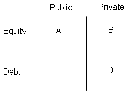

Chances are, when you think about investing in real estate the first thing that comes to mind is your home. For many people, their home is the single largest investment they will ever make. But have you ever stopped to consider that once you purchase a home it becomes part of your overall portfolio of investments? In fact, it's one of the most important parts of your portfolio because it serves a dual role as not only an investment but also a centerpiece to your daily life.
Though a home is one of the largest investments the average investor will purchase, there are other types of real estate investments worth investing in. The most common type is income-producing real estate. Large income-producing real estate properties are commonly purchased by high net-worth individuals and institutions, such as life insurance companies, real estate investment trusts (REITs) and pension funds. (To read more about REITs, see What Are REITs?, Basic Valuation Of A Real Estate Investment Trust (REIT) and The REIT Way.)
Income-producing properties are also purchased by individual investors in the form of smaller apartment buildings, duplexes or even a single family homes or condominiums that are rented out to tenants. (To find out more about being a landlord, see Tips For The Prospective Landlord, Tax Deductions For Rental Property Owners and Investing In Real Estate.)
In the context of portfolio investing, real estate is traditionally considered an "alternative" investment class. That means it is a supplementary investment used to build on a primary portfolio of stocks, bonds and other securities.
One of the main differences between investing in a piece of real estate as compared to stocks or bonds is that real estate is an investment in the "bricks and mortar" of a building and the land it is built upon. This makes real estate highly tangible, because unlike most stocks you can see and touch your property. This often creates substantial pride of ownership, but tangibility also has its downside because real estate requires hands-on management. You don't need to mow the lawn of a bond or unplug the toilet of a stock!
In this tutorial, we will discuss the types and characteristics of real estate, things to think about when buying and owning property, and the rationale for adding real estate to your portfolio.
The most basic definition real estate is "an interest in land". Broadening that definition somewhat, the word "interest" can mean either an ownership interest (also known as a fee-simple interest) or a leasehold interest. In an ownership interest, the investor is entitled to the full rights of ownership of the land (for example, to legally use and transfer the title of the land/property), and must also assume the risks and responsibilities of a landowner (for example, any losses as a result of natural disasters and the obligation to pay property taxes). On the other side of the relationship, a leasehold interest only exists when a landowner agrees to pass some of his rights on to a tenant in exchange for a payment of rent. If you rent an apartment, you have a leasehold interest in real estate. If you own a home, you have an ownership interest in that home. Some jurisdictions recognize other interests beyond these two, such as a life estate, but those interests are less common in the investment arena.
As a real estate investor, you will most likely be purchasing ownership interests and then earning a return on that investment by issuing leasehold interests to tenants, who will in turn pay rent. It is also not uncommon for an investor to acquire a long-term leasehold interest in land, which then has a building constructed upon it. At the end of the land lease, the land and building become the property of the original land-owner.
Private Versus Public Markets
When you are planning your real estate investments, one of your first tasks is to decide what kind of exposure to the real estate market is appropriate for your situation. Different exposures produce varying levels of risk and return. Your choice will also influence the means by which you will acquire the real estate.
The first type of market you could participate in is the private market. In the private market, you would be purchasing a direct interest in one or more real estate properties. You would own and operate the piece of real estate yourself (or through a property manager), and you would receive the rent payments and value changes from that investment. For example, if you were to purchase an industrial building that was leased to one or more tenants who pay you rent, you would be participating in the private real estate market. You could also participate in this market by purchasing properties with any number of partners - this is known as a pool or syndicate.
Alternatively, you could choose to invest in the public real estate market. You would be participating in the public market if you purchased a share or unit in a publicly traded real estate company, such as a real estate investment trust (REIT). If you buy a real estate security, you are investing in a company that owns real estate and manages it on behalf of the shareholders/unit-holders of the company. As a result, your exposure to the real estate market is more indirect. A real estate security usually pays a dividend or distribution in order to send the rent payments that it receives from tenants to its shareholders/unit-holders. Any price appreciation or depreciation in the assets owned by the company is reflected in its share or unit price.
(We will discuss REIT investments and their characteristics in greater detail in Chapter 6.)
Equity and Debt Investments
In addition to choosing your market, you need to choose whether to invest in debt or equity.
When you invest in debt, you are lending funds to an owner or purchaser of real estate. You receive periodic interest payments from the owner and a security charge against the property in the form of a mortgage. At the end of the mortgage term, you get back the balance of your mortgage principal. This type of real estate investing is quite like that of bonds. (To read more about mortgages, see Shopping for a Mortgage, Understanding the Mortgage Payment Structure and Paying Off Your Mortgage.)
An equity investment, on the other hand, represents a residual interest in the property. When you are an equity investor, you are essentially the owner of the property. You stand to gain a lot when the property value increases or if you are able to get more rent for your building. However, if things should go wrong (for example, all your tenants vacate and you can't make your mortgage payment) then the mortgagee, who has a priority interest in your property, may foreclose and you must forfeit your equity position to satisfy their security. In that sense, the risks of an equity position in real estate is much like that of owning stock.
The choice of whether you want to invest in equity or debt will depend upon your risk tolerance and your return expectations. The riskier choice is investing in equity, but you can also make a lot more money! As the greater the risk, the greater the reward. (To find out where your risk tolerance lies, see Determining Risk And The Risk Pyramid.)
The Investment Selection Matrix
Now, let's put it all together.
Once you select your market and decide whether debt or equity investing is appropriate, it becomes apparent what type of security to buy or investment to make. Take a look at the following diagram:
If you choose quadrant A, Public Equity, you should purchase real estate securities such as standard equity REITs or publicly traded real estate operating companies.
If you select quadrant B, Private Equity, you should buy direct, ownership interests in real estate properties.
If you choose quadrant C, Public Debt, you would purchase a mortgage REIT, a mortgage-backed securities (MBS) or (Commercial Mortgage-Backed Securities (CMBS).
If quadrant D, Private Debt, is most appropriate, then you would lend money to purchasers of real estate, thereby investing in mortgages.
(We will expand our discussion of some of these investment structures in Chapter 6.)
In the previous chapter, we discussed the various categories of available real estate investments, including direct property ownership, mortgages, and debt or equity securities. What these real estate investments have in common is that there are one or more tangible real estate properties underlying each investment. That means when you make an investment, it is important to consider the characteristics of the underlying real estate because the performance of those properties will impact the performance of your investment.
When you're looking at the underlying real estate, one of the most important criteria (aside from location, location, location!) is the type of property. When considering a purchase, you need to ask yourself whether the underlying properties are, for example, residential homes, shopping malls, warehouses, office towers or a combination of any of these. Each type of real estate has a different set of drivers influencing its performance. You can't simply assume one type of property will perform well in a market where a different type is performing well. Likewise, you can't assume one type of property will continue to be a good investment simply because it has performed well in the past.
Income-Producing and Non-Income-Producing Investments
There are four broad types of income-producing real estate: offices, retail, industrial and leased residential. There are many other less common types as well, such as hotels, mini-storage, parking lots and seniors care housing. The key criteria in these investments that we are focusing on is that they are income producing.
Non-income-producing investments, such as houses, vacation properties or vacant commercial buildings, are as sound as income-producing investments. Just keep in mind that if you invest equity in a non-income producing property you will not receive any rent, so all of your return must be through capital appreciation. If you invest in debt secured by non-income-producing real estate, remember that the borrower's personal income must be sufficient to cover the mortgage payments, because there is no tenant income to secure the payments.
Office Property
Offices are the "flagship" investment for many real estate owners. They tend to be, on average, the largest and highest profile property type because of their typical location in downtown cores and sprawling suburban office parks.
At its most fundamental level, the demand for office space is tied to companies' requirement for office workers, and the average space per office worker. The typical office worker is involved in things like finance, accounting, insurance, real estate, services, management and administration. As these "white-collar" jobs grow, there is greater demand for office spaces.
Returns from office properties can be highly variable because the market tends to be sensitive to economic performance. One downside is that office buildings have high operating costs, so if you lose a tenant it can have a substantial impact on the returns for the property. However, in times of prosperity, offices tend to perform extremely well, because demand for space causes rental rates to increase and an extended time period is required to build an office tower to relieve the pressure on the market and rents.
Retail Property
There is a wide variety of Retail properties, ranging from large enclosed shopping malls to single tenant buildings in pedestrian zones. At the present time, the Power Center format is in favor, with retailers occupying larger premises than in the enclosed mall format, and having greater visibility and access from adjacent roadways.
Many retail properties have an anchor, which is a large, well-known retailer that acts as a draw to the center. An example of a well-known anchor is Wal-Mart. If a retail property has a food store as an anchor, it is said to be food-anchored or grocery-anchored; such anchors would typically enhance the fundamentals of a property and make it more desirable for investment. Often, a retail center has one or more ancillary multi-bay buildings containing smaller tenants. One of these small units is termed a commercial retail unit (CRU).
The demand for retail space has many drivers. Among them are: location, visibility, population density, population growth and relative income levels. From an economic perspective, retails tend to perform best in growing economies and when retail sales growth is high.
Returns from Retails tend to be more stable than Offices, in part because retail leases are generally longer and retailers are less inclined to relocate as compared to office tenants.
Industrial Property
Industrials are often considered the "staple" of the average real estate investor. Generally, they require smaller average investments, are less management intensive and have lower operating costs than their office and retail counterparts.
There are varying types of industrials depending on the use of the building. For example, buildings could be used for warehousing, manufacturing, research and development, or distribution. Some industrials can even have partial or full office build-outs.
Some important factors to consider in an industrial property would be functionality (for example, ceiling height), location relative to major transport routes (including rail or sea), building configuration, loading and the degree of specialization in the space (such as whether it has cranes or freezers). For some uses, the presence of outdoor or covered yard space is important.
Multi-family Residential Property
Multi-family residential property generally delivers the most stable returns, because no matter what the economic cycle, people always need a place to live. The result is that in normal markets, residential occupancy tends to stay reasonably high. Another factor contributing to the stability of residential property is that the loss of a single tenant has a minimal impact on the bottom line, whereas if you lose a tenant in any other type of property the negative effects can be much more significant.
For most commercial property types, tenant leases are either net or partially net, meaning that most operating expenses can be passed along to tenants. However, residential properties typically do not have this attribute, meaning that the risk of increases in building operating costs is borne by the property owner for the duration of the lease.
A positive aspect of residential properties is that in some countries, government-insured financing is available. At the expense of a small premium, insured financing lowers the interest rate on mortgages, thereby enhancing potential returns from the investment.
One of the beneficial features of real estate is that it produces relatively consistent total returns that are a hybrid of income and capital growth. In that sense, real estate has a coupon-paying bond-like component in that it pays a regular, steady income stream, and it has a stock-like component in that its value has a propensity to fluctuate. And, like all securities that you have a long position in, you would prefer the value to go up more often than it goes down!
The income return from real estate is directly linked to the rent payments received from tenants, minus the costs of operating the property and outgoing mortgage/financing payments. So, you can understand how important it is to keep your property as full as possible. If you lose too many tenants, you won't have sufficient rents being paid by the other tenants to cover the building operating costs. Your ability to keep the building full depends on the strength of the leasing market - that is, the supply and demand for space similar to the space you are trying to lease. In weaker markets with oversupply of vacancies or poor demand, you would have to charge less rent to keep your building full than in a strong leasing market. And unfortunately, if your rents are lower, your income returns are lower.
Capital appreciation of a property is determined by having the property appraised. (We discuss the appraisal process further in chapter 7, but for now you should just know that an appraiser uses actual sale transactions that have occurred and other pieces of market data to estimate what your property would be worth if it were to be sold.) If the appraiser thinks your property would sell for more than you bought it for, then you've achieved a positive capital return. Because the appraiser uses past transactions in judging values, capital returns are directly linked to the performance of the investment sales market. The investment sales market is affected largely by the supply and demand of investment product.
The majority of the volatility in real estate returns comes from the capital appreciation component of returns. Income returns tend to be fairly stable, and capital returns fluctuate more. The volatility of total returns falls somewhere in between.
Other Characteristics
Some of the other characteristics that make real estate unique as compared to other investment alternatives are as follows:
As we discussed in Chapter 1, real estate is usually held as part of a larger portfolio, and is generally considered an alternative investment class. Real estate fits well as part of a portfolio because it has several qualities that can enhance the return of a larger portfolio, or reduce portfolio risk at the same level of return.
Benefits
Some of the benefits of having real estate in your portfolio are as follows:
Real estate also has some characteristics that require special consideration when making an investment decision:
Although the leasing and investment market have independent cycles, one does tend to influence the other. For instance, if the leasing market is in decline, then growth in rents should decrease. Faced with decreasing rental growth, real estate investors might view real estate prices as being too high and might therefore stop making additional purchases. If capital seeking real estate decreases, then prices decrease to force equilibrium.
Although timing the market is not advisable, you should be aware of the stage of the market when you are making your purchase and consider how the property will perform as it moves through the cycles.
In Chapter 2, we presented the investment selection matrix, which outlines your alternatives when choosing the kind of real estate investment to make. You can choose to invest in the following types: public equity, private equity, public debt and private debt. In this chapter, we will expand on these structures with a particular focus on equity real estate investments.
Public Equity
Public equity is made up of real estate securities such as standard equity REITs or publicly traded real estate operating companies. Because investments are traded on a stock exchange, they tend to exhibit return patterns that are similar to equities, even though the underlying assets are real estate.
At any point in time, these public securities will be trading at a discount or a premium to their net asset values (NAVs), meaning that the value of the company is different than the sum of the underlying real estate values. This occurs as a result of the stock market valuation of these securities, which incorporates things like investor sentiment and psychology. It is important to be aware of this characteristic when making an investment in a real estate security because such investments can perform very differently than the underlying real estate that these public companies own.
One of the benefits of buying a security is the relative ease of acquisition. You buy it in the same manner as you would buy a stock - phone your broker, make the order and pay the relevant commission. You also achieve good liquidity with these investments, because they can be sold on short notice into the market with none of the usual delays that take place in the private market.
Private Equity
Private equity real estate investing is the traditional ownership method. If you own a home, you've participated in this market.
There are a number of things to keep in mind when looking for deals, here are a few tips to follow:
It is also worthwhile to complete a thorough due diligence on your prospective investment. This process can include having reports completed on the physical and environmental condition of the property, and having an appraisal performed. Your lawyer will be able to obtain a variety of search results and will assist in examining the title. Depending on the complexity of the purchase, there are many other tasks that may be required.
There are many costs related to due diligence and the purchasing process, so be sure these costs become part of your financial analysis. Some typical costs include lawyer's fees, financing fees, appraisal costs and other administrative fees.
Don't think that your job is done after your purchase; here are some things you need to consider after purchasing your piece of real estate:
The security's rating is determined by a third party rating service such as Moody's, Fitch, Standard & Poor's and Dominion Bond Rating Service. The rating process involves the agency reviewing the pool of mortgage loans, including an examination of the underlying collateral assets, to determine the quality of cash flow that is likely to be derived from those loans.
If the loans are of a very high credit quality, a larger proportion of the mortgage pool will be assigned an AAA rating. The rating categories are consistent with bond rating categories, so for instance the A tranche is subordinate to the AAA tranche, and the buyer of the B-piece will be subordinate to all of the more senior tranches. Usually, all the holders of the more senior securities must receive their principal and interest payments before the subordinate pieces receive theirs. As such, tranches with lower credit quality are riskier, but have higher return potential.
Because each tranche of the loan pool has a different set of risks, maturity, sensitivity to changes in interest rates and return, your investment decision should be based on the type of exposure you require for your portfolio. It should also incorporate your assessment of the interest rate environment and any likely changes. CMBS securities can be purchased from a broker of such securities. It is recommended that you consult with an advisor prior to purchasing such securities because they can behave differently depending on the interest rate environment.
Private debt is not so much purchased as it is issued. That is, if you would like to invest in private debt, you should provide mortgage financing to an owner of real estate. In return for your mortgage loan, you will receive a fixed or floating interest rate, and a priority claim on the real estate assets in the event of default on the loan. A common example of investing in private debt is a vendor take-back mortgage (VTB). If you own a commercial property and sell it to a purchaser, you could choose to accept all or part of the payment over time. Just like a conventional mortgage received from a financial institution, the purchaser would pay interest on the borrowed funds over the length of the term, and you would register your claim to receive the payments on the title to the property.
Another alternative is to make a contribution into a private mortgage pool, which is a pool of capital that is invested in a variety of mortgages. Such an investment would require diligence to determine its risk, because there is no third party rating agency to depend upon. A benefit of a mortgage pool versus a VTB is that a default of one mortgage will have less of an impact on your investment if it is combined with other mortgages to balance the risk. To purchase units in a private mortgage pool, you should contact an investment manager who assembles such pools, or a broker involved in the private mortgage market.
Real estate returns are generated in two ways. First, the income return comes from tenants' rent payments. The income return is a straightforward calculation because all you need to know is how much cash remains after all property expenses have been paid. The second type of return is the capital return, which is the increase or decrease in the value of the property due to changes in market demand and/or inflation. The capital return is more difficult to calculate, and requires the property to be valued or appraised.
If you want to determine the value of a real estate investment, the most accurate method is to sell the property and see how much money you get for it. Of course, the problem with this method is that you would no longer own that asset! In most cases you would want to determine the value without selling the asset, so you would approximate the value of the property based on the price that was actually achieved for other similar properties in the area of interest.
The approximation process can be inexact and subjective. The real estate market does not have the convenience of a public market, such as that for stocks, where you can continuously value an asset. Also, it is rare for two real estate properties to be exactly the same - unlike two shares of stock in a company, which are exactly the same. A third factor contributing to the subjectivity of real estate valuation is that it doesn't trade very often, so it can be difficult to establish a market value- especially if substantial time has passed since the last comparable trade.
All of the above noted valuation issues have given rise to a group of professional consultants referred to as appraisers. The task of an appraiser is to objectively assess the market value of a property by hypothesizing the most likely price of a trade between an arms-length buyer and seller. Appraisers have appropriate education and experience to perform property valuations, and typically are certified by a professional body which sets appraisal rules that must be followed by all of its members.
Appraisal Methods
Appraisers use a variety of methods to determine value, and for income-producing properties the most common method is the capitalization rate approach. In its simplest form, a capitalization rate equals the net income from a property divided by its purchase price. To use the capitalization rate approach, an appraiser gathers capitalization rates from actual sales of similar properties, and based on those sales and capitalization rates forms a judgment on the appropriate capitalization rate for the property being valued. The appraiser then applies that capitalization rate to the subject property's income to estimate the value. For example, if the market-derived capitalization rate for a property is 10%, and the net income for that subject property is $100,000 in the year after you purchase the property, then the value of the property is $1,000,000.
Another often-used appraisal method is the discounted cash flow approach. This approach is somewhat more technical than the capitalization rate approach, but involves forecasting property cash flows over a fixed period then discounting the cash flows at a market-derived return to determine the current value. For example, assume that the cash flow from a property in Year 1 after the purchase is $100,000, and that the cash flow subsequently inflates by 5% per year. At the end of Year 5, assume the property is sold for $1,000,000.
The resulting cash flows would be as follows:
| -- | Operating Cash Flows | Total Cash Flows | |
| Year 1 | $100,000 | n/a | $100,000 |
| Year 2 | $105,000 | n/a | $105,000 |
| Year 3 | $110,250 | n/a | $110,250 |
| Year 4 | $115,763 | n/a | $115,763 |
| Year 5 | $121,551 | $1,000,000 | $1,121,551 |
If your required return on the purchase of the subject property with the above noted cash flows is 9%, then you would determine the net present value of the total cash flows using a discount rate of 9%. In this case, your value is roughly $1,075,000. If you lower your return expectations to 8%, then your property value would be closer to $1,120,000. In practice, an appraiser would be using market-derived discount rates, so he or she would use his best judgment on what the required return should be for the property being appraised.
If an appraiser is looking at a vacant building or land, they would use a third valuation method - the comparable sales approach. This approach assumes that if, for example, a vacant building sold for $100 per square foot, then the value of another similar vacant building would also be $100 per square foot. Land is also valued this way, with particular attention being paid to ensuring the benchmark land has equivalent zoning and density potential as the subject land.
Hiring an Appraiser
When choosing an appraiser to value your property, the most important consideration is that they have the appropriate experience and background to appraise your type of property. You don't want to hire a residential appraiser to value your commercial building unless they also have experience valuing commercial buildings. They also need to have experience appraising properties in your geographical area, because different locations have different market attributes. If your appraisal will be used by a third party, such as a mortgage lender, then you should be certain the lender will accept reports from your chosen appraiser. Last, the amount of the appraiser's fees should be a consideration.
Mortgage Financing
The type and amount of mortgage financing is important to the performance of the property for two reasons. First, if your property has a closed mortgage in place that also happens to have poor terms (for example, a high interest rate or an undesirable loan to value or amortization period), then it can affect the value of the property. Therefore, it is important to consider the perception of the market when locking in your financing if there is a chance you will sell the property during the mortgage term.
The second reason financing is important is because of the ongoing effects of leverage. Although this topic is more fully covered in other mortgage related articles, it is worth briefly mentioning an example of how debt can influence your capital returns resulting from your appraisal.
Assume you purchased a property for $1,000,000 one year ago without any financing. You just completed an appraisal that says the property is worth $1,200,000. So, your capital gain is $200,000, which results in a capital return of 20%.
Now, assume you bought the same property but financed your purchase with a 50% loan to value, interest-only mortgage. After your purchase you therefore have $500,000 of your own cash invested and the bank has loaned you the other $500,000. One year later, you still owe the bank $500,000 because you used an interest-only mortgage. So when you get your $1,200,000 appraisal and subtract what you owe the bank, your equity in that property is worth $700,000. Since you have $500,000 invested, your capital gain is $200,000. Your capital return, however, is 40% rather than the 20% you would have achieved if you didn't use financing. This occurs because you still achieve a gain of $200,000, but you get it using only $500,000 of your own money instead of $1,000,000 of your own cash (but keep in mind that you would need to pay out interest payments to the bank). This is known as leverage, and it has a powerful impact on property returns.
We've covered quite a few points throughout this tutorial. Below are some of the main points that were made along the way:
{kind=link}